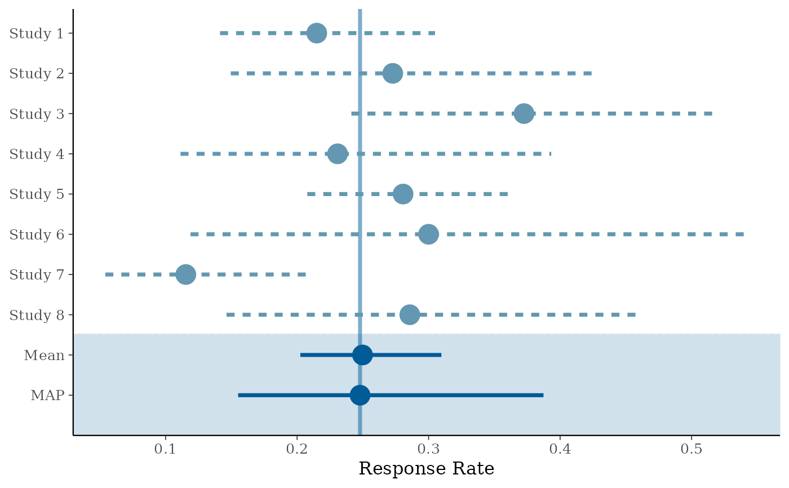
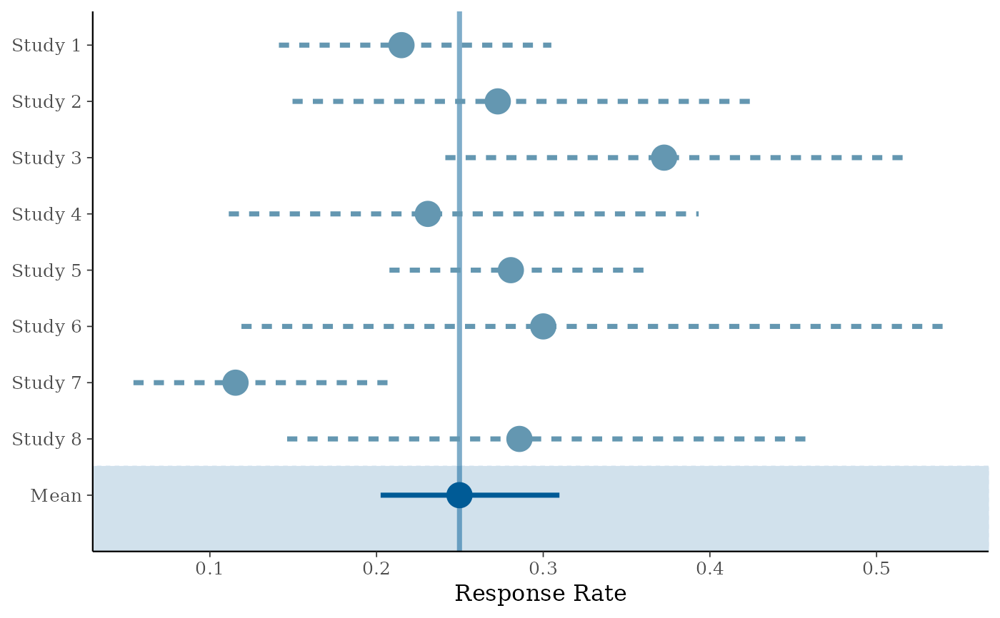
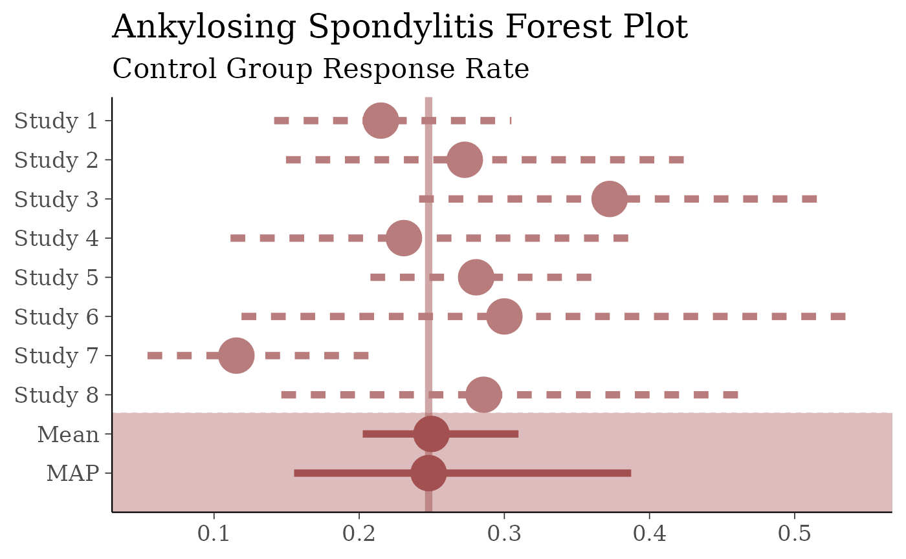

Creates a forest plot for gMAP analysis objects.
Arguments
- x
gMAPobject.- prob
confidence interval width and probability mass of credible intervals.
- est
can be set to one of
both(default),MAP,Meanornone. Controls which model estimates are to be included.- model
controls which estimates are displayed per study. Either
stratified(default),bothormeta.- point_est
shown point estimate. Either
median(default) ormean.- size
controls point and linesize.
- alpha
transparency of reference line. Setting
alpha=0suppresses the reference line.
Details
The function creates a forest plot suitable for
gMAP analyses. Note that the Meta-Analytic-Predictive
prior is included by default in the plot as opposed to only showing
the estimated model mean. See the examples below to obtain standard
forest plots.
Also note that the plot internally flips the x and y-axis. Therefore, if you want to manipulate the x-axis, you have to give commands affecting the y-axis (see examples).
Customizing ggplot2 plots
The returned plot is a ggplot2 object. Please refer to the
"Customizing Plots" vignette which is part of RBesT
documentation for an introduction. For simple modifications (change
labels, add reference lines, ...) consider the commands found in
bayesplot-helpers. For more advanced
customizations please use the ggplot2 package directly. A
description of the most common tasks can be found in the
R Cookbook and a full
reference of available commands can be found at the
ggplot2 documentation
site.
Examples
# we consider the example AS MAP analysis
example(AS)
#>
#> AS> ## Setting up dummy sampling for fast execution of example
#> AS> ## Please use 4 chains and 20x more warmup & iter in practice
#> AS> .user_mc_options <- options(RBesT.MC.warmup=50, RBesT.MC.iter=100,
#> AS+ RBesT.MC.chains=2, RBesT.MC.thin=1)
#>
#> AS> set.seed(34563)
#>
#> AS> map_AS <- gMAP(cbind(r, n-r) ~ 1 | study,
#> AS+ family=binomial,
#> AS+ data=AS,
#> AS+ tau.dist="HalfNormal", tau.prior=1,
#> AS+ beta.prior=2)
#> Assuming default prior location for beta: 0
#> Warning: The largest R-hat is 1.11, indicating chains have not mixed.
#> Running the chains for more iterations may help. See
#> https://mc-stan.org/misc/warnings.html#r-hat
#> Warning: Bulk Effective Samples Size (ESS) is too low, indicating posterior means and medians may be unreliable.
#> Running the chains for more iterations may help. See
#> https://mc-stan.org/misc/warnings.html#bulk-ess
#> Warning: Tail Effective Samples Size (ESS) is too low, indicating posterior variances and tail quantiles may be unreliable.
#> Running the chains for more iterations may help. See
#> https://mc-stan.org/misc/warnings.html#tail-ess
#> Warning: Maximal Rhat > 1.1. Consider increasing RBesT.MC.warmup MCMC parameter.
#> Final MCMC sample equivalent to less than 1000 independent draws.
#> Please consider increasing the MCMC simulation size.
#>
#> AS> ## Recover user set sampling defaults
#> AS> options(.user_mc_options)
# default forest plot for a gMAP analysis
forest_plot(map_AS)

# standard forest plot (only stratified estimate and Mean)
forest_plot(map_AS, est=c("Mean"), model="stratified")

# to further customize these plots, first load bayesplot and ggplot2
library(bayesplot)
#> This is bayesplot version 1.11.1
#> - Online documentation and vignettes at mc-stan.org/bayesplot
#> - bayesplot theme set to bayesplot::theme_default()
#> * Does _not_ affect other ggplot2 plots
#> * See ?bayesplot_theme_set for details on theme setting
library(ggplot2)
# to make plots with red colors, big fonts for presentations, suppress
# the x axis label and add another title (with a subtitle)
color_scheme_set("red")
theme_set(theme_default(base_size=16))
forest_plot(map_AS, size=2) +
yaxis_title(FALSE) +
ggtitle("Ankylosing Spondylitis Forest Plot",
subtitle="Control Group Response Rate")

# the defaults are set with
color_scheme_set("blue")
theme_set(theme_default(base_size=12))